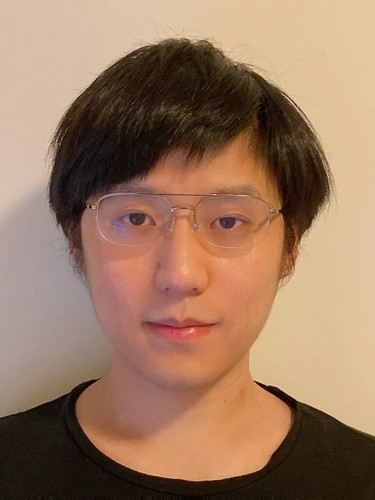

Borong Zhang
|
 |
Email address: Postal address: Office: 818 Van Vleck Hall Links: |
About Me
I am a fifth-year Ph.D. candidate in Applied and Computational Mathematics at the University of Wisconsin–Madison.
My research focuses on scientific machine learning, inverse problems, and computational imaging.
I am advised by Qin Li and Leonardo Andrés Zepeda Núñez, and I am a member of Kinetics at Madison.
I received my B.A. in Applied Mathematics and Computer Science from UC Berkeley in 2020, where I was mentored by Rainer Sachs.
Beginning in Fall 2026, I will join the School of Mathematics at the Georgia Institute of Technology as a Visiting Assistant Professor, where I will work with Wei Zhu.